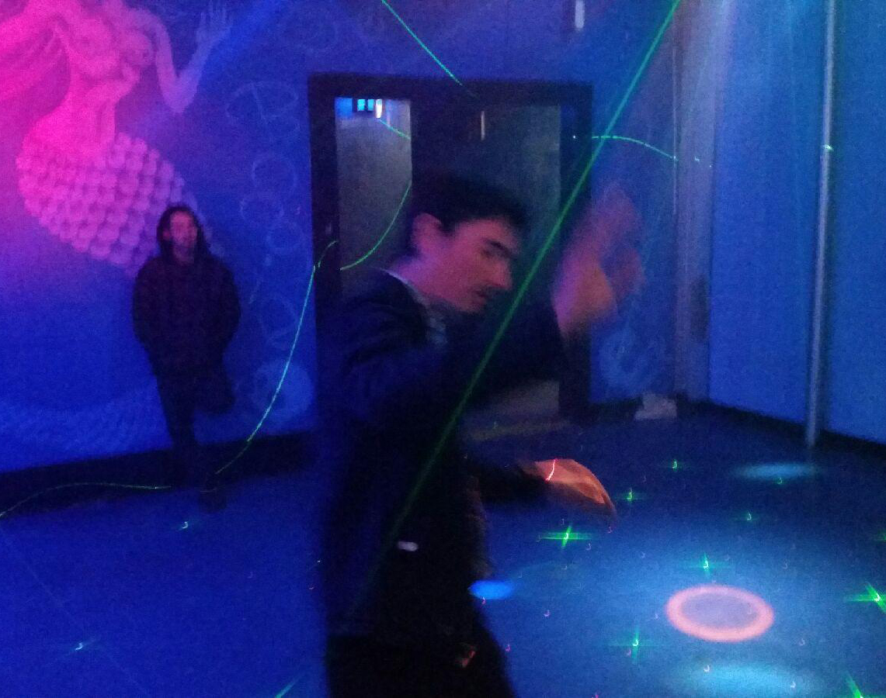

Greeting from San Diego!
You can call me JAMES.
I'm a web developer that has taken a long and strange journey to where I am today. I've been a projectionist, a bookkeeper, a graphic designer, a copy editor and proofreader. Seemingly all unrelated, I actually think they all led me to this focused point in my career.
I'm an avid music fan constantly seeking out new or old music that I have yet to discover. The same goes for movies. I'm the kind of film buff that for whatever reason feels the need to log and review everything they have seen. Not doing those things, I'd probably be at a history museum or dancing somewhere.